Title
Pieces: 938
Dimensions (L⋅W⋅H): 20.4cm x 24.3cm x 18.5cm
Additional Links: Rebrickable Instructions
A poseable recreation of Spybot—the mischievous reconnaissance probe droid who serves as a part of Maul's crew in Maul – Shadow Lord. Designed to match the relative scale of the other official Star Wars figurine sets (R2, C3P0, Chewbacca, etc). Spybot has a large degree of mobility in the show, and most of these movements are recreatable with this design; The torso, head, and feet can all rotate independantly of each other, and the character can recreate a hiding, standing, or flying pose by moving the head and arms.
↢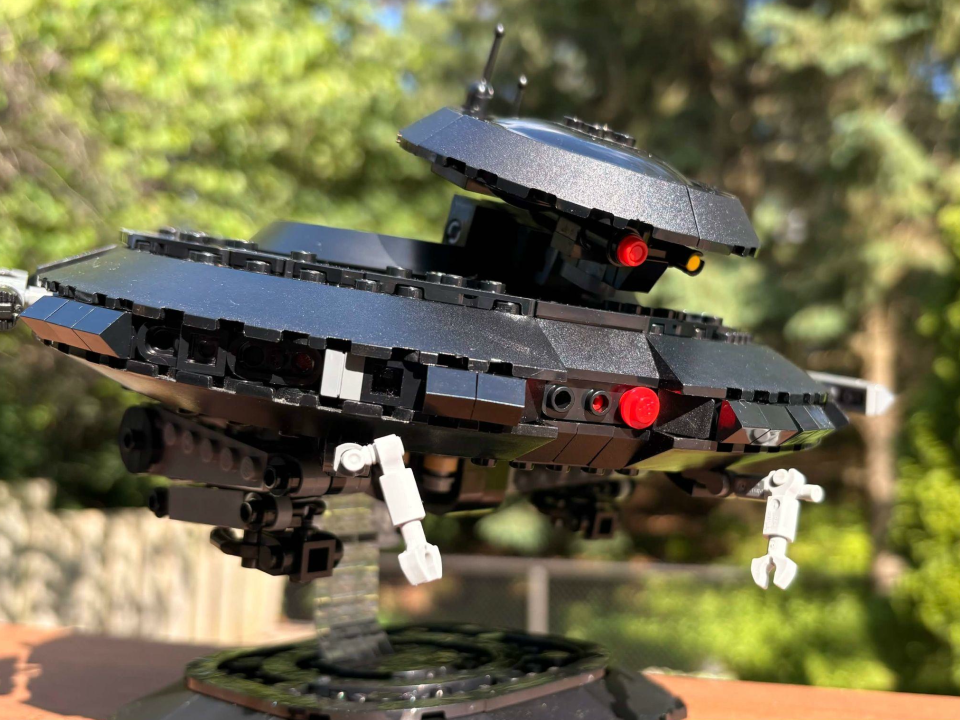
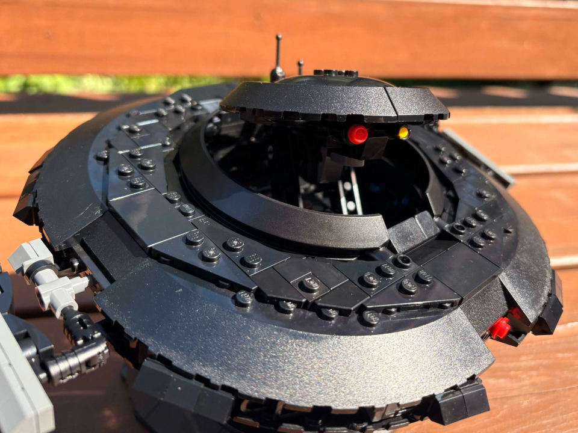
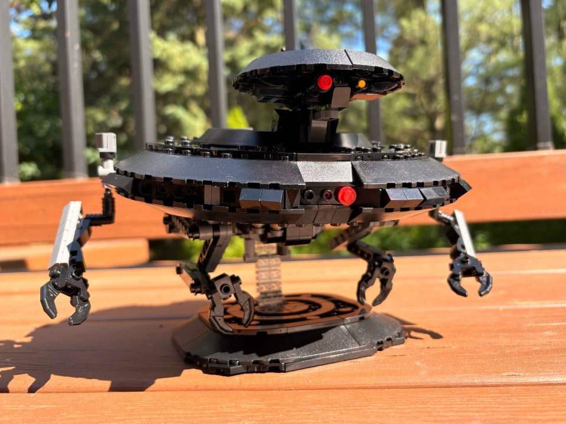
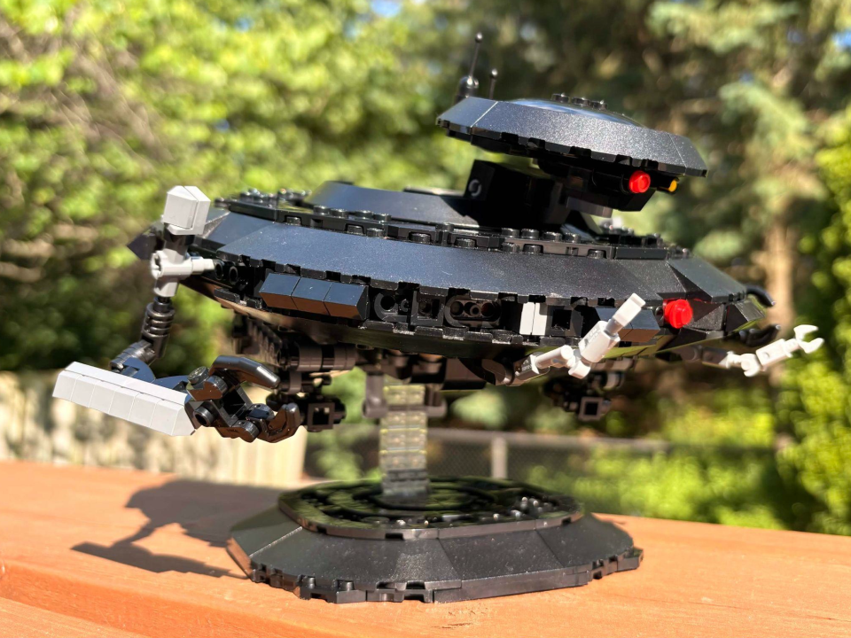
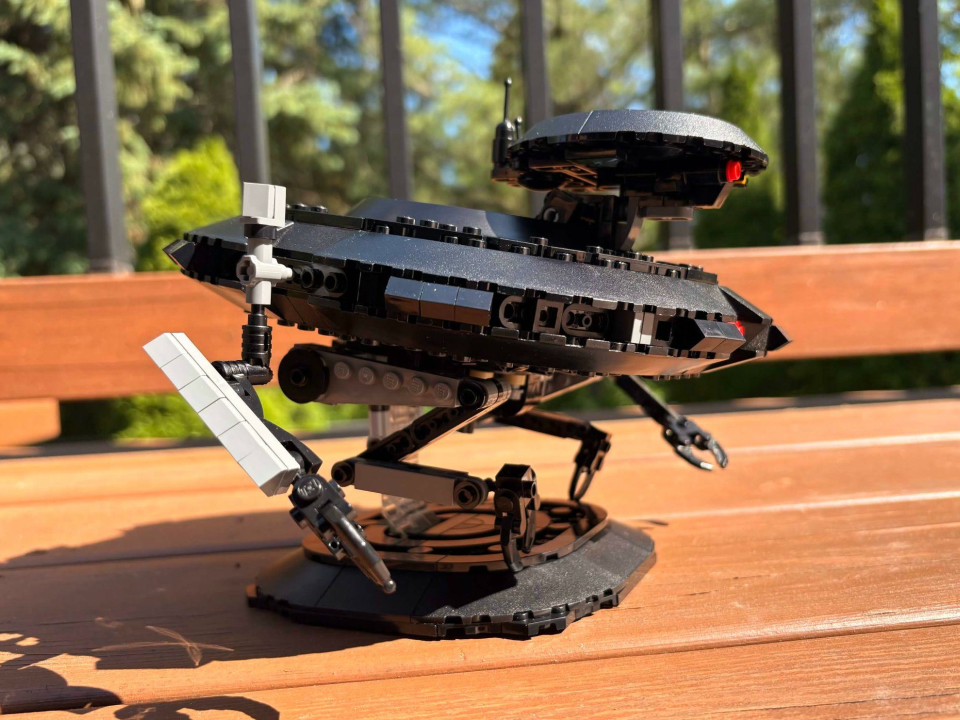
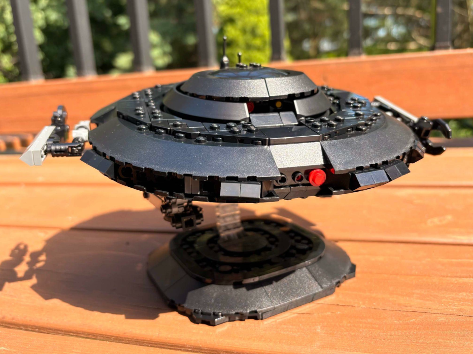
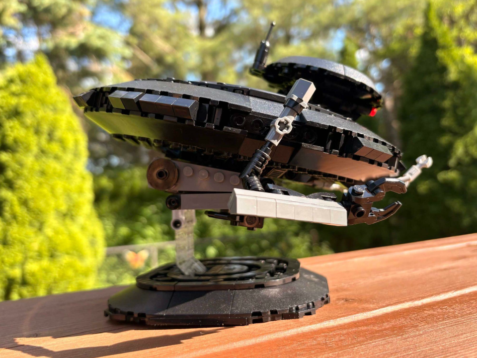
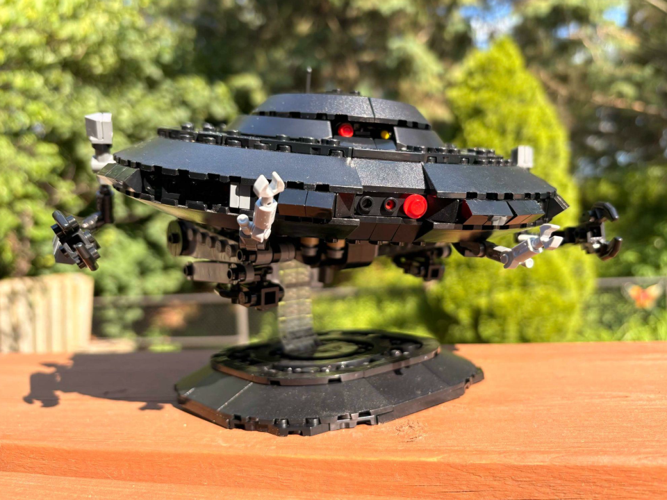
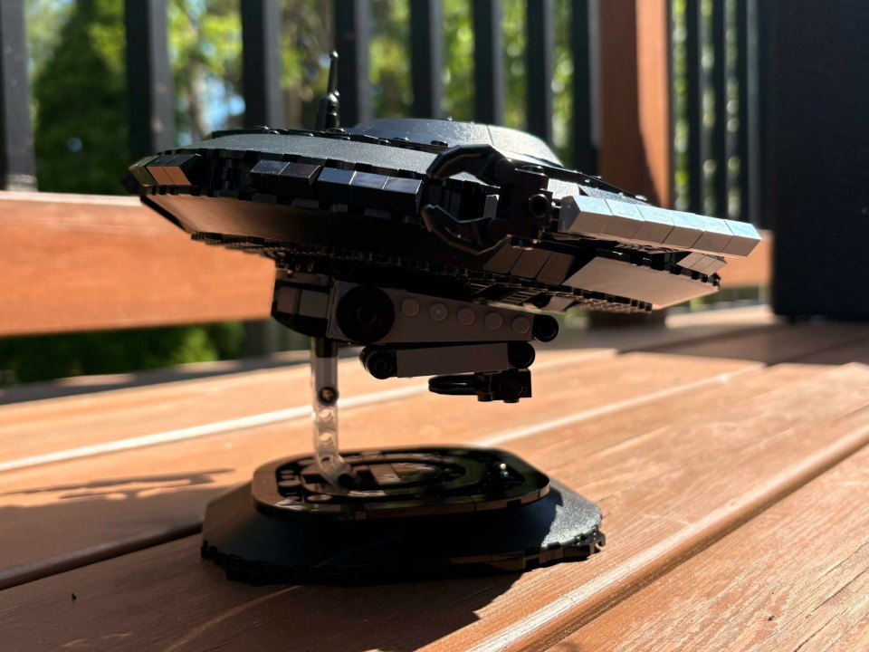
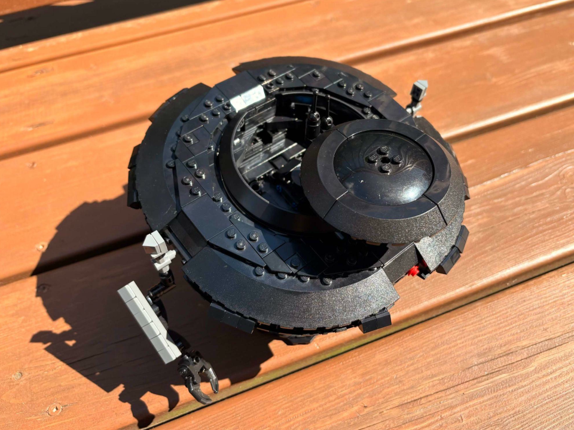


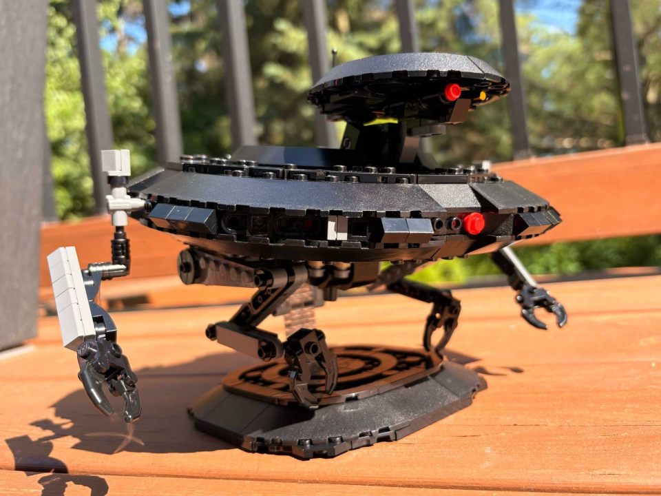
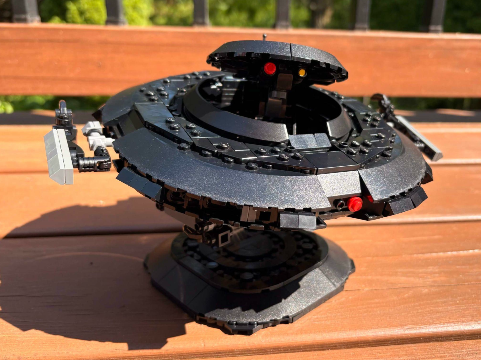